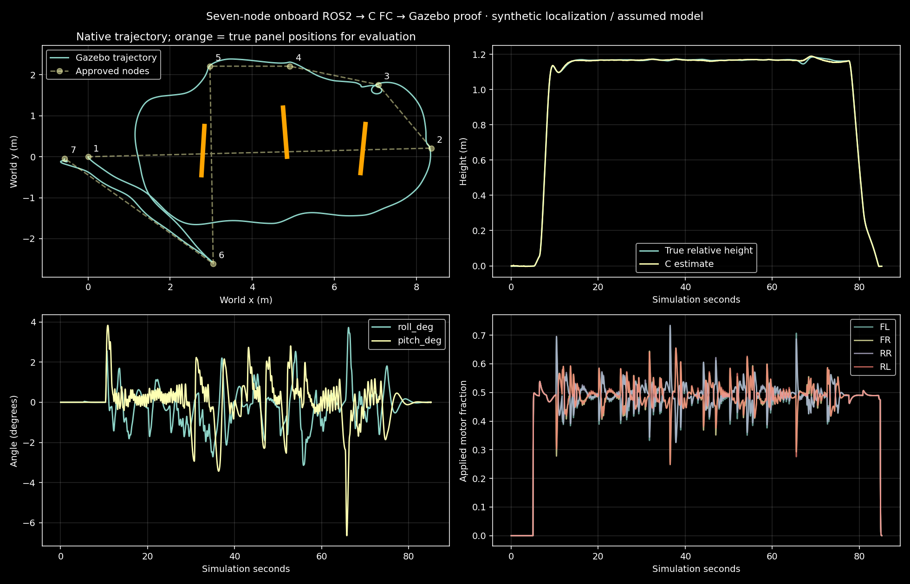

Seven approved nodes, one PC request, neutral pilot after selection. The onboard ROS2 C++ mission/planner generated the commands consumed by the actual C FC host build.
Native Gazebo / OGRE2 · perfect simulated localization · synthetic sensors/calibration · assumed mass/inertia/thrust. No physical-flight validation.

Negative control: deliberately removing companion frames prevented completion and the FC marked them stale. That is an expected failed flight, retained separately.
Machine-readable audit and assumptions · Raw input frames · PC requests, neutral HID and DDS publisher identity · Original onboard mission log · Source/binary hashes and process commands
Original human-input replay video · Manual wire audit. This replay uses the same C FC binary, no ROS2, no companion frames and no pose-feedback pilot. It is a 45-second open-loop replay, not a new live human flight or a successful landing test. It can drift horizontally; there is no hidden position hold.
The software structure and recorded wire show which process supplied commands. Synthetic odometry still makes localization easier than real flight; known-panel PnP is not general obstacle ranging. Old automated manual trials used a labelled feedback-based virtual human; they are not presented as human input. Real manual trials retain actual XInput logs and use the same C motor path, with no companion in standalone mode.